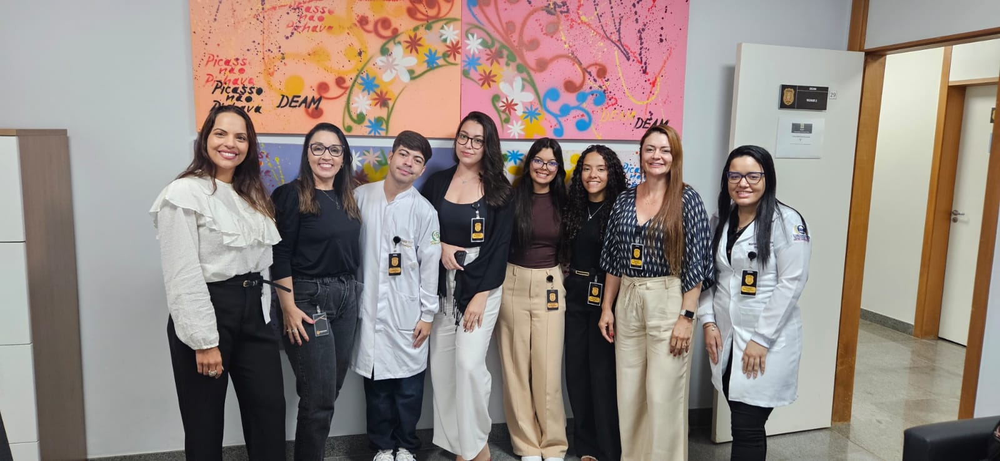
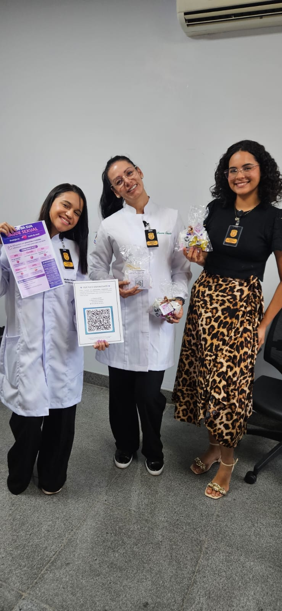

Cuidado, informação e apoio em cada passo.
Você não está sozinha. Este espaço foi criado para orientar, acolher e ajudar mulheres em momentos difíceis. Informação, apoio e cuidado, tudo em um só lugar.
Este projeto foi desenvolvido por estudantes da área da saúde com o objetivo de levar informação e acolhimento em ambientes como delegacias, apoiando mulheres em situações vulneráveis.
Esta cartilha foi criada para orientar mulheres sobre as principais Infecções Sexualmente Transmissíveis (ISTs). Informação é proteção e cuidado com a própria saúde.
O que é: O HPV (Papilomavírus Humano) é a Infecção Sexualmente Transmissível (IST) mais comum no mundo, afetando pele e mucosas. Pode causar verrugas genitais ou evoluir para cânceres (colo do útero, ânus, pênis, garganta).
Sintomas: Frequentemente é assintomático ("vírus silencioso"). Quando aparecem, as lesões podem ser verrugas (baixo risco) ou lesões pré-cancerosas (alto risco, como tipos 16 e 18).
Prevenção: Vacina HPV, uso de preservativo; Exame Papanicolau.
Tratamento: Não há cura para o vírus em si, mas as lesões e verrugas têm tratamento (crioterapia, ácidos, cauterização).
O que é: Infecção bacteriana, causada pela bactéria Treponema pallidum, transmitida por relação sexual desprotegida ou da mãe para o feto (sífilis congênita).
Sintomas: Na fase primária, surge uma ferida indolor (cancro duro) no local da infecção, que desaparece sozinha, mas a bactéria continua no corpo. Na fase secundária, ocorrem manchas no corpo, mãos e pés, febre e mal-estar.
Prevenção: Uso correto de camisinha masculina ou feminina e realização de pré-natal para gestantes.
Tratamento: A sífilis tem cura, sendo o tratamento principal feito com injeções de Penicilina Benzatina (Benzetacil).
O que é: HIV significa Vírus da Imunodeficiência Humana. Ele ataca o sistema imunológico, principalmente os linfócitos CD4, que são como “soldados” de defesa do corpo. Se não tratado, pode evoluir para a AIDS (Síndrome da Imunodeficiência Adquirida).
Sintomas: O HIV tem fases: Fase inicial (2 a 4 semanas após infecção): Febre Dor de garganta Ínguas (linfonodos aumentados) Cansaço Manchas no corpo (Parece uma gripe forte) Fase assintomática: Pode durar anos sem sintomas O vírus continua ativo no corpo Fase avançada (AIDS): Perda de peso Infecções frequentes Fraqueza intensa Doenças oportunistas.
Prevenção: Uso de preservativos, uso de medicamentos preventivos (PrEP/PEP), não compartilhamento de perfurocortantes e tratamento de gestantes.
Tratamento: O tratamento antirretroviral (TARV) é gratuito no Brasil e impede que o HIV enfraqueça o sistema imunológico.
O que é: Herpes é uma infecção causada pelo vírus HSV (Herpes Simplex Virus). Existem dois tipos principais: HSV-1 → mais comum na boca (herpes labial) HSV-2 → mais comum na região genital Depois que entra no corpo, o vírus não vai embora. Ele fica “adormecido” e pode reaparecer em momentos de queda de imunidade, estresse ou cansaço.
Sintomas: Nem todo mundo sente, mas quando aparecem, costumam seguir um padrão: Herpes labial: Ardência ou coceira antes da lesão Pequenas bolhas agrupadas (tipo “feridinhas”) Dor local Casquinhas após alguns dias Herpes genital: Bolhas dolorosas na região íntima Feridas abertas após o rompimento das bolhas Dor ao urinar Coceira ou queimação Pode vir com febre e mal-estar na primeira crise
Transmissão: A transmissão é simples e traiçoeira: Contato direto com a lesão (beijo, sexo oral, vaginal ou anal) Mesmo sem ferida visível, ainda pode transmitir (menos comum, mas possível) Compartilhar objetos (como copos ou talheres, no caso labial)
Prevenção: Evitar contato direto com lesões Usar preservativo (reduz risco, mas não elimina totalmente) Não compartilhar objetos pessoais Evitar beijo ou sexo durante crises Manter imunidade boa (sono, alimentação, menos estresse)
Tratamento: Não existe cura definitiva, mas existe controle. Antivirais como Aciclovir, Valaciclovir e Famciclovir Pomadas ou comprimidos (depende do caso) Tratamento precoce diminui duração e intensidade Em casos frequentes, pode usar medicação contínua (profilaxia)
O que é: É uma infecção sexualmente transmissível causada pela bactéria Chlamydia trachomatis. Afeta principalmente os órgãos genitais, mas também pode atingir garganta e olhos.
Sintomas: Quando aparecem, podem ser: Em mulheres: Corrimento vaginal anormal; Dor ao urinar; Dor durante a relação; Sangramento fora do período menstrual; Em homens: Secreção pelo pênis; Ardência ao urinar; Dor ou inchaço nos testículos; Em ambos: Dor pélvica; Infecção na garganta (após sexo oral); Inflamação nos olhos (casos mais raros);
Transmissão: A transmissão acontece por: Relação sexual sem proteção (vaginal, anal ou oral). Contato com secreções infectadas. Mãe para o bebê durante o parto.
Prevenção: Uso de preservativo em todas as relações. Testagem regular (principalmente se tiver mais de um parceiro). Evitar relações durante tratamento de IST. Comunicação com o parceiro
Tratamento: Tem cura. Antibióticos como Azitromicina ou Doxiciclina. Tratamento geralmente rápido (dose única ou alguns dias). O parceiro também precisa tratar, mesmo sem sintomas.
Procure uma unidade de saúde para diagnóstico e tratamento. Cuidar de si é um ato de coragem.
Unidades Básicas de Saúde
Atendimento e orientação perto de você.
Centro Especializado em Doenças Infecciosas
Endereço: EQS 508/509 – Asa Sul, Brasília
Telefone: (61) 3449-4778
Endereço: EQS 508/509 – Asa Sul, Brasília
Ver no mapaMinistério da Saúde • SUS • Organização Mundial da Saúde
Projeto desenvolvido por estudantes da área da saúde, com atuação prática em ambiente de acolhimento e orientação à mulher.
Neidy
Luana
Eduardo
Maria Clara
Nariane
Nathalia
Lauana


Email: l38303592@gmail.com